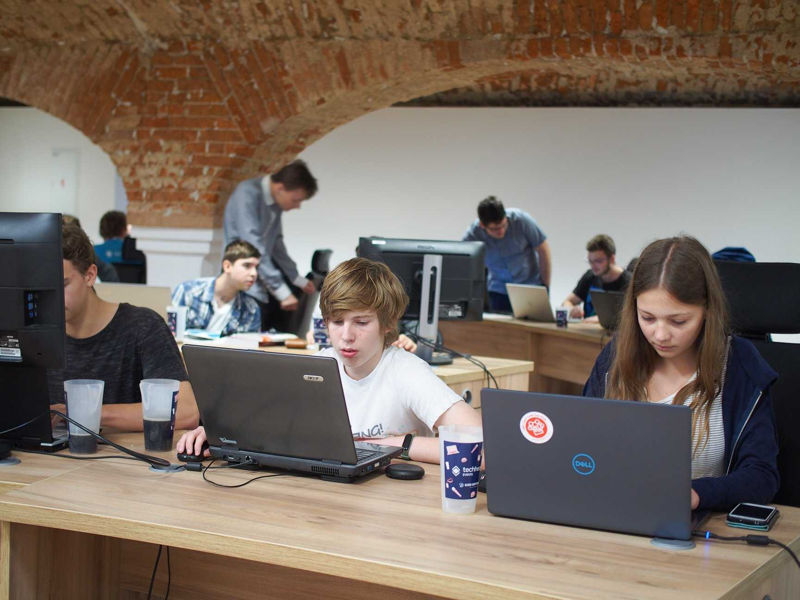

JakBylo.cz
Web Sprint je soutěž pro studenty středních škol, kteří se nebojí poměřit síly při vypracování webového projektu v extrémně krátkém čase. Dvou či tříčlenné týmy si nejprve vyberou projekt, který se potom budou snažit v průběhu jednoho dne intenzivně zpracovat. Není důležitá jen rychlost, ale taky kvalita. Vítězný tým bude vybrán podle čtyř kritérií – vzhled, UX, technické zpracování a spokojenost zadavatele. Kromě hodnotných cen se můžou výherci těšit na dlouhodobější spolupráci se zadavatelem, to znamená získání cenné praxe nejen do životopisu.
